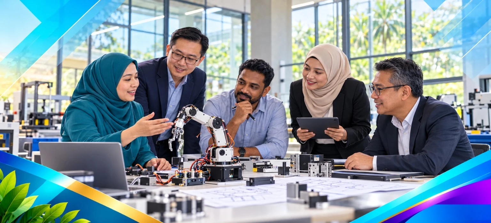

Skip to content

Committee
The people behind ITARS 2027.
Meet the leadership and working committees supporting the symposium.
Leadership
Patron
- Ir. Dr. Tarmizi bin Abu SemanChairman of MTDA
- Datuk Dr. Haji Mohd Zahari bin IsmailDirector of JPPKK
Advisor
- Ts. Hamdan bin SamdinDirector of PTSN
- Datin Hajah Rusiah binti Sa’adChairman of PUSPANITA JPPKK
Programme Chairman
- Hajah Hafidzah binti Ahmad AbbasPUSPANITA JPPKK/MTDA
- Ts. Norhayati binti Abd Wahab@Dul AhadChairman of PUSPANITA PTSN
Programme Director
- Hasyireen binti Abdul HalimPUSPANITA PTSN/MTDA
- Maria binti MansorPUSPANITA JPPKK
- Ts. Ilya binti IsmailPUSPANITA PSA
Programme Deputy Director
- Tuan Rozilaazawani binti Tuan MatPUSPANITA JPPKK/MTDA
- Dr. Khairunnisa binti A. RahmanPUSPANITA JPPKK/MTDA
- Salizahanim binti LemanPUSPANITA JPPKK/MTDA
Working committees
Secretaries
- Siti Fatimah binti Sa’adPUSPANITA PTSN
- Nabilla Huda binti BaharuddinPUSPANITA PTSN
Treasurers
- Rosmawati binti JalalPUSPANITA PTSN
- Zuraini binti Mohd SafuanPUSPANITA PTSN
Promotion
- Ts. Dr. Ramu a/l VelusamyPUO/MTDA
- Mohammad Ariffin bin RayaPTSN
Opening and Closing Ceremony
- Wan Majdah binti Ton MamatPUSPANITA PSA
- Nurul Akmar binti KamaruddinPUSPANITA PSA
Website and Graphic Designer
- Dr. Nin Hayati binti Mohd YusoffKK Masjid Tanah
- Zid Abrar bin AkbarKK Ledang
- Nor Shahima binti OthmanKK Kuala Langat
Publication
- Dr. Muhammad Razuan bin Abdul RazakPUO/MTDA
- Siti Nazurah binti Md ZaidPUSPANITA PTSN
Proceeding
- Ts. Nursahizalina binti Mohd Sa’atPUSPANITA PTSN
- Adleena Adha binti Abdul Mua’ainPUSPANITA PTSN
Parallel Session Coordinators
- Widdey Khalson binti EdrisPUSPANITA PTSN
- Suriani binti IliasPUSPANITA PSA
Presentation Panel Reviewer
- Dr. Azmi bin AhmadPTSN
- Dr. Rosni bin YusoffPUSPANITA PTSN
Assistant Presentation Panel Reviewer
- Khairul Napisham bin Abdul RazakPSA
Award Judging
- Dr. Dulina binti TholibonPUSPANITA PTSN
Paper Reviewers
- Dr. Rahizana binti Mohd IbrahimPUSPANITA PTSN
- Dr. Rozieana binti AbuPUSPANITA PTSN
Abstract Management
- Eni binti AznanPUSPANITA JPPKK/MTDA
- Dr. Mohd. Firdaus bin Habib MohdKKBM
Conference Management System Coordinator
Programme Book
- Farha binti MuhammadPUSPANITA PTSN
- Nor Azrin binti Ahmad KurninPUSPANITA PTSN
Technical
- Ts. Dr. Mohd Hafiz bin AliPTSN
- Fazlina binti YunusPUSPANITA PTSN/MTDA
- Sobah binti Abdul HalimPUSPANITA KKBDA
Certificate
- Nor Hashina binti BahrudinPUSPANITA PTSN
- Norlida binti ShaariPUSPANITA PTSN/MTDA
Registration
- Juliyana binti HussinPUSPANITA PTSN
- Dewi Nilam Rupa’a binti RazaliPUSPANITA PTSN
Proofread
- Wirdawati binti Ahmad@Mohd IsaPUSPANITA PTSN
- Akhmaliah binti Abd RahimPUSPANITA PTSN